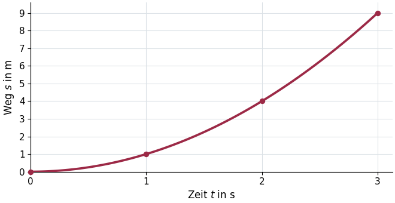

Gleichmäßig beschleunigte Bewegung
Bei konstanter Beschleunigung ändert sich die Geschwindigkeit in gleichen Zeitabschnitten um denselben Betrag. Wählst du die Fahrtrichtung als positive Richtung, ist die Beschleunigung beim Bremsen negativ.
Bewegung aus der Ruhe
Beginnt die Bewegung bei t = 0 aus der Ruhe und setzt du den Startpunkt bei s = 0, gelten diese Gleichungen.
Beispiel
Ein Körper beschleunigt aus der Ruhe 3 Sekunden lang mit . Dann beträgt seine Geschwindigkeit und er hat 9 Meter zurückgelegt.


Weg und Geschwindigkeit vergleichen
s
Weg s = m
Geschwindigkeit v =
Halte die Beschleunigung fest und vergleiche die Werte bei 1 s und 2 s. Was ändert sich, wenn du anschließend bei gleicher Zeit die Beschleunigung verdoppelst?